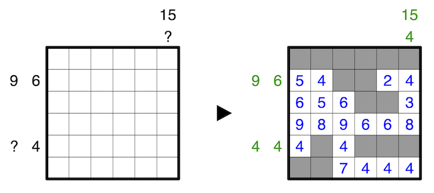

Place into every unshaded cell the number of unshaded cells seen in all four directions, including itself, at that location, where shaded cells obstruct vision. Numbers must not be placed into shaded cells.
Clues outside the grid indicate the sums of connected groups of numbers in the respective row or column, in order, where shaded cells serve as delimeters between groups. A question mark can be any positive number.
A 6x6 example is provided:
